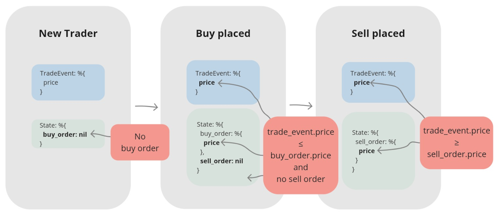

Chapter 2 Create a naive trading strategy - a single trader process without supervision
2.1 Objectives
- create another supervised application inside the umbrella to store our trading strategy
- define callbacks for events dependent on the state of the trader
- push events from the streamer app to the naive app
2.2 Initializiation
To develop our naive strategy will need to create a new supervised application inside our umbrella project:
cd apps
mix new naive --supWe can now focus on creating a trader abstraction inside that newly created application. First we need to create a new file called trader.ex inside apps/naive/lib/naive/.
Let’s start with a skeleton of a GenServer:
# /apps/naive/lib/naive/trader.ex
defmodule Naive.Trader do
use GenServer
require Logger
def start_link(args) do
GenServer.start_link(__MODULE__, args, name: :trader)
end
def init(args) do
{:ok, args}
end
endOur module uses the GenServer behavior and to fulfill its “contract”, we need to implement the init/1 function. The start_link/1 function is a convention and it allows us to register the process with a name(it’s a default function that the Supervisor will use when starting the Trader). We also add a require Logger as we will keep on logging across the module.
Next, let’s model the state of our server:
# /apps/naive/lib/naive/trader.ex
defmodule State do
@enforce_keys [:symbol, :profit_interval, :tick_size]
defstruct [
:symbol,
:buy_order,
:sell_order,
:profit_interval,
:tick_size
]
endOur trader needs to know:
- what symbol does it need to trade (“symbol” here is a pair of assets for example “XRPUSDT”, which is XRP to/from USDT)
- placed buy order (if any)
- placed sell order (if any)
- profit interval (what net profit % we would like to achieve when buying and selling an asset - single trade cycle)
- tick_size (yes, I know, jargon warning. We can’t ignore it here as it needs to be fetched from Binance and it’s used to calculate a valid price. Tick size differs between symbols and it is the smallest acceptable price movement up or down. For example in the physical world tick size for USD is a single cent, you can’t sell something for $1.234, it’s either $1.23 or $1.24 (a single cent difference between those is the tick size) - more info here.
Our strategy won’t be able to work without symbol, profit_interval nor tick_size so we added them to the @enforce_keys attribute. This will ensure that we won’t create an invalid %State{} without those values.
As now we know that our GenServer will need to receive those details via args, we can update pattern matching in start_link/1 and init/1 functions to confirm that passed values are indeed maps:
# /apps/naive/lib/naive/trader.ex
def start_link(%{} = args) do
...
end
def init(%{symbol: symbol, profit_interval: profit_interval}) do
...
endAs we are already in the init/1 function we will need to modify it to fetch the tick_size for the passed symbol and initialize a fresh state:
# /apps/naive/lib/naive/trader.ex
def init(%{symbol: symbol, profit_interval: profit_interval}) do
symbol = String.upcase(symbol)
Logger.info("Initializing new trader for #{symbol}")
tick_size = fetch_tick_size(symbol)
{:ok,
%State{
symbol: symbol,
profit_interval: profit_interval,
tick_size: tick_size
}}
endWe are uppercasing the symbol above as Binance’s REST API accepts only uppercased symbols.
It’s time to connect to Binance’s REST API. The easiest way to do that will be to use the binance module.
As previously, looking through the module’s docs on Github, we can see the Installation section. We will follow the steps mentioned there, starting from adding binance to the deps in /apps/naive/mix.exs:
# /apps/naive/mix.ex
defp deps do
[
{:binance, "~> 1.0"},
{:decimal, "~> 2.0"},
{:streamer, in_umbrella: true}
]
endBesides adding the :binance module, we also added :decimal and the :streamer. The decimal module will help us to calculate the buy and sell prices (without the decimal module we would have problems with precision). Lastly, we need to include the :streamer application(created in the first chapter) as we will use the %Streamer.Binance.TradeEvent{} struct inside the naive application.
We need to run mix deps.get to install our new deps.
We can now get back to the trader module and focus on fetching the tick size from Binance:
# /apps/naive/lib/naive/trader.ex
defp fetch_tick_size(symbol) do
Binance.get_exchange_info()
|> elem(1)
|> Map.get(:symbols)
|> Enum.find(&(&1["symbol"] == symbol))
|> Map.get("filters")
|> Enum.find(&(&1["filterType"] == "PRICE_FILTER"))
|> Map.get("tickSize")
endWe are using get_exchange_info/0 to fetch the list of symbols, which we will filter to find the symbol that we are requested to trade. Tick size is defined as a PRICE_FILTER filter. Here’s the link to the documentation listing all keys in the result. In a nutshell, that’s how the important parts of the result look like:
{:ok, %{
...
symbols: [
%{
"symbol": "ETHUSDT",
...
"filters": [
...
%{"filterType: "PRICE_FILTER", "tickSize": tickSize, ...}
],
...
}
]
}}2.3 How trading strategy will work?
Our trader process has an internal state that will serve as an indicator of its step in the trade cycle. The following diagram shows 3 possible trader states that trader will progress through from left to right:

Our trader will be receiving trade events sequentially and take decisions based on its own state and trade event’s contents.
We will focus on a trader in 3 different states:
- a new trader without any orders
- a trader with a buy order placed
- a trader with a sell order placed.
First state - A new trader
The trader doesn’t have any open orders which we can confirm by pattern matching on the buy_order field from its state. From the incoming event, we can get
the current price which we will use in the buy order that the trader will place.
Second state - Buy order placed
After placing a buy order, the trader will be pattern matching to confirm that has incoming event filled his buy order otherwise ignoring it. When a trade event matching the order id of the trader’s buy order will arrive, it means that the buy order got filled(simplification - our order could be filled in two or more transactions but implementation in this chapter won’t cater for this case, it will always assume that it got filled in a single transaction) and the trader can now place the sell order based on the expected profit and the buy_price.
Third state - Sell order placed
Finally, in a very similar fashion to the previous state, the trader will be pattern matching to confirm that the incoming event has filled his sell order(matching order id), otherwise ignore it. When a trade event matching the order id of trader’s sell order will arrive, which means that the sell order got filled(simplification as described above) and the full trade cycle has ended and the trader can now exit.
2.3.1 Implementation of the first scenario
Enough theory :) back to the editor, we will implement the first scenario. Before doing that let’s alias Streamer’s TradeEvent struct as we will rely on it heavily in pattern matching.
# /apps/naive/lib/naive/trader.ex
alias Streamer.Binance.TradeEventWe are also aliasing the %Streamer.Binance.TradeEvent{} struct as we will rely on it heavily in pattern matching.
To confirm that we are dealing with a “new” trader, we will pattern match on buy_order: nil from its state:
# /apps/naive/lib/naive/trader.ex
def handle_cast(
%TradeEvent{price: price},
%State{symbol: symbol, buy_order: nil} = state
) do
quantity = "100" # <= Hardcoded until chapter 7
Logger.info("Placing BUY order for #{symbol} @ #{price}, quantity: #{quantity}")
{:ok, %Binance.OrderResponse{} = order} =
Binance.order_limit_buy(symbol, quantity, price, "GTC")
{:noreply, %{state | buy_order: order}}
endFor the time being, we will keep the quantity hardcoded as this chapter will get really long otherwise - don’t worry, we will refactor this in one of the next chapters.
After confirming that we deal with the “new” trader(by pattern matching on the buy_order field from the state), we can safely progress to placing a new buy order. We just need to remember to return the updated state as otherwise, the trader will go on a shopping spree, as every next incoming event will cause further buy orders(the above pattern match will continue to be successful).
2.3.2 Implementation of the second scenario
With that out of the way, we can now move on to monitoring for an event that matches our buy order id and quantity to confirm that our buy order got filled:
# /apps/naive/lib/naive/trader.ex
def handle_cast(
%TradeEvent{
buyer_order_id: order_id,
quantity: quantity
},
%State{
symbol: symbol,
buy_order: %Binance.OrderResponse{
price: buy_price,
order_id: order_id,
orig_qty: quantity
},
profit_interval: profit_interval,
tick_size: tick_size
} = state
) do
sell_price = calculate_sell_price(buy_price, profit_interval, tick_size)
Logger.info(
"Buy order filled, placing SELL order for " <>
"#{symbol} @ #{sell_price}), quantity: #{quantity}"
)
{:ok, %Binance.OrderResponse{} = order} =
Binance.order_limit_sell(symbol, quantity, sell_price, "GTC")
{:noreply, %{state | sell_order: order}}
endWe will implement calculating sell price in a separate function based on buy price, profit interval, and tick_size.
Our pattern match will confirm that indeed our buy order got filled(order_id and quantity matches) so we can now proceed with placing a sell order using calculated sell price and quantity retrieved from the buy order. Again, don’t forget to return the updated state as otherwise, the trader will keep on placing sell orders for every incoming event.
To calculate the sell price we will need to use precise math and that will require a custom module. We will use the Decimal module, so first, let’s alias it at the top of the file:
# /apps/naive/lib/naive/trader.ex
alias Decimal, as: DNow to calculate the correct sell price, we can use the following formula which gets me pretty close to expected value:
# /apps/naive/lib/naive/trader.ex
defp calculate_sell_price(buy_price, profit_interval, tick_size) do
fee = "1.001"
original_price = D.mult(buy_price, fee)
net_target_price =
D.mult(
original_price,
D.add("1.0", profit_interval)
)
gross_target_price = D.mult(net_target_price, fee)
D.to_string(
D.mult(
D.div_int(gross_target_price, tick_size),
tick_size
),
:normal
)
endFirst, we will hardcode the fee to 0.1% which we will refactor in one of the future chapters.
We started by calculating the original_price which is the buy price together with the fee that we paid on top of it.
Next, we enlarge the originally paid price by profit interval to get net_target_price.
As we will be charged a fee for selling, we need to add the fee again on top of the net target sell price(we will call this amount the gross_target_price).
Next, we will use the tick size as Binance won’t accept any prices that aren’t divisible by the symbols’ tick sizes so we need to “normalize” them on our side.
2.3.3 Implementation of the third scenario
Getting back to handling incoming events, we can now add a clause for a trader that wants to confirm that his sell order was filled:
# /apps/naive/lib/naive/trader.ex
def handle_cast(
%TradeEvent{
seller_order_id: order_id,
quantity: quantity
},
%State{
sell_order: %Binance.OrderResponse{
order_id: order_id,
orig_qty: quantity
}
} = state
) do
Logger.info("Trade finished, trader will now exit")
{:stop, :normal, state}
endWhen the sell order was successfully filled(confirmed by pattern matching above), there’s nothing else to do for the trader, so it can return a tuple with :stop atom which will cause the trader process to terminate.
2.3.4 Implementation fallback scenario
A final callback function that we will need to implement will just ignore all incoming events as they were not matched by any of the previous pattern matches:
# /apps/naive/lib/naive/trader.ex
def handle_cast(%TradeEvent{}, state) do
{:noreply, state}
endWe need this callback for cases where our trader has an “open” order(not yet filled) and the incoming event has nothing to do with it, so it needs to be ignored.
2.3.5 Updating the Naive interface
Now we will update an interface of our naive application by modifying the Naive module to allow to send an event to the trader:
# /apps/naive/lib/naive.ex
defmodule Naive do
@moduledoc """
Documentation for `Naive`.
"""
alias Streamer.Binance.TradeEvent
def send_event(%TradeEvent{} = event) do
GenServer.cast(:trader, event)
end
endWe will use the fact that we registered our trader process with a name to be able to cast a message to it.
2.3.6 Updating streamer app
To glue our apps together for the time and keep things simple in this chapter we will modify the streamer process to simply call our new Naive interface directly by appending the following function call at the end of the process_event/1 function inside the Streamer.Binance module:
# /apps/streamer/lib/streamer/binance.ex
defp process_event(%{"e" => "trade"} = event) do
...
Naive.send_event(trade_event)
endThis creates a two-way link between the streamer and the naive app. In the next chapter, we will fix that as in the perfect world those apps shouldn’t even be aware of existence of each other.
2.3.7 Access details to Binance
Inside the config of our umbrella project we create a new file config/secrets.exs. We will use this for our Binance account access details.
# /config/secrets.exs
import Config
config :binance,
api_key: "YOUR-API-KEY-HERE",
secret_key: "YOUR-SECRET-KEY-HERE"We don’t want to check this file in, so we add it to our .gitignore:
# .gitignore
config/secrets.exsFinally, we update our main config file to include it using import_config:
# /config/config.exs
# Import secrets file with Binance keys if it exists
if File.exists?("config/secrets.exs") do
import_config("secrets.exs")
endImportant note: To be able to run the below test and perform real trades, a Binance account is required with a balance of at least 20 USDT. In the 4th chapter, we will focus on creating a BinanceMock that will allow us to run our bot without the requirement for a real Binance account. You don’t need to test run it now if you don’t need/want to have an account.
2.3.8 Test run
Now it’s time to give our implementation a run for its money. Once again, to be able to do that you will need to have at least 20 USDT tokens in your Binance’s wallet and you will lose just under 0.5% of your USDTs(as “expected profit” is below 0 to quickly showcase the full trade cycle) in the following test:
$ iex -S mix
...
iex(1)> Naive.Trader.start_link(%{symbol: "XRPUSDT", profit_interval: "-0.01"})
13:45:30.648 [info] Initializing new trader for XRPUSDT
{:ok, #PID<0.355.0>}
iex(2)> Streamer.start_streaming("xrpusdt")
{:ok, #PID<0.372.0>}
iex(3)>
13:45:32.561 [info] Placing BUY order for XRPUSDT @ 0.25979000, quantity: 100
13:45:32.831 [info] Buy order filled, placing SELL order for XRPUSDT @ 0.2577, quantity: 100
13:45:33.094 [info] Trade finished, trader will now exitAfter starting the IEx session, start the trader process with a map containing the symbol and profit interval. To be able to quickly test the full trade cycle we will pass a sub-zero profit interval instead of waiting for the price increase.
Next, we will start streaming on the same symbol, please be aware that this will cause an immediate reaction in the trader process.
We can see that our trader placed a buy order at 25.979c per XRP, it was filled in under 300ms, so then the trader placed a sell order at ~25.77c which was also filled in under 300ms. This way the trader finished the trade cycle and the process can terminate.
That’s it. Congratulations! You just made your first algorithmic trade and you should be proud of that! In the process of creating that algorithm, we touched on multiple topics including GenServer and depending on its state and external data (trade events) to perform different actions - this is a very common workflow that Elixir engineers are following and it’s great to see it in action.
[Note] Please remember to run the mix format to keep things nice and tidy.
Source code for this chapter can be found at Github